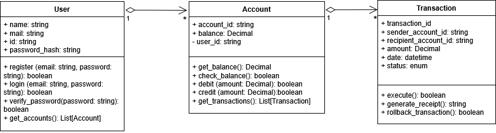

PDF version of the project
Business requirements for new functionality
This project examines the functionality of the money transfer (transaction) service. The Use-case diagram below shows how this service interacts with other services for the client
There are three main classes interacting within this service:
1. Users
2. Accounts
3. Transactions
The class diagram below shows their attributes, methods, and relationships:
Based on this diagram an ER diagram has been built and tables have been created in the database for further interaction with the service interface.

The LucidChart toolkit allows you to immediately export an ER diagram in the format of SQL queries for generating tables. The following SQL queries are required to create the required tables:
| Table | SQL query |
|---|---|
| USERS | CREATE TABLE users ( ID INT AUTO_INCREMENT, Name VARCHAR(100), Email VARCHAR(255) UNIQUE, password_hashed VARCHAR(255), PRIMARY KEY (ID) ); |
| ACCOUNTS | CREATE TABLE accounts ( account_id INT AUTO_INCREMENT, user_id INT, balance DECIMAL(15, 2) DEFAULT 0.00, PRIMARY KEY (account_id), FOREIGN KEY (user_id) REFERENCES Users(ID) ); |
| TRANSACTIONS | CREATE TABLE transactions ( transaction_id INT AUTO_INCREMENT, sender_account_id INT, recipient_account_id INT, amount DECIMAL(15, 2), date DATETIME DEFAULT CURRENT_TIMESTAMP, status ENUM('PENDING', 'COMPLETED', 'FAILED'), PRIMARY KEY (transaction_id), FOREIGN KEY (sender_account_id) REFERENCES Accounts(account_id), FOREIGN KEY (recipient_account_id) REFERENCES Accounts(account_id) ); |
After describing the classes and databases involved in the money transfer process, it is necessary to describe the interaction of these components. Below is a sequence diagram showing the main steps in the money transfer process.

Detailed description of the money transfer process:
| Title | UC: Make a money transfer |
| Priority | Must |
| Scope | Mobile app |
| Context | Make a money transfer from one account to another |
| Actor | User, recipient, sender |
| Goal | Transfer money from one account to another |
| Precondition | User must be authorized |
| Trigger | User clicks the "Make Transfer" button |
| Postcondition | Funds are transferred from one selected account to another selected account |
| Basic behavior scenario |
1.1 User enters the amount and recipient 1.2 Frontend sends API request: POST /api/v1/transaction 2.1 API Gateway checks for token availability (alternative explicit options for this stage are outside the scope of this case) 2.2 API Gateway sends a request to check the sender and recipient 2.3 SQL query 2.4 DB processes the request 2.4.1 DB returns a response: Accounts exist 3.1 Checking whether the balance is sufficient to complete the transaction: check_balance(); 3.1.1 There are enough funds to complete the transaction 4.1 API Gateway sends a request to create a transaction 4.2 SQL query 4.3 DB processes the request 4.3.1 DB returns a response: Transaction created 5.1 After completing the transaction, balances need to be updated, SQL query 5.2 DB processes the request 5.2.1 DB returns a response: Balances updated 5.2.2 - 5.2.4 - Returning a “200 OK” response - Transaction completed |
| Alternative scenario: Accounts for the transaction not found | 2.4.2 DB returns a response: Accounts not found 2.4.3 An entry is made in the log: Accounts not found 2.4.4 - 2.4.6 - Returning a “404 Not Found” response - Accounts not found |
| Alternative scenario: Error updating balance | 5.2.5 DB returns a response: Error updating balance 5.2.6 An entry is made in the log: Error updating balance 5.2.7 - 5.2.8 Deleting a transaction from the database (SQL query) 5.2.9 - 5.2.10 The database returns a response: Transaction deleted 5.2.11 - 5.2.13 Returning a response “500 Internal Error” - Error: Transaction aborted |
| Alternative scenario: Error writing transaction | 4.3.2 The database returns a response: Error writing transaction 4.3.3 An entry is made in the log: Error writing transaction 4.3.4 - 4.3.6 Returning a response “500 Internal Error” - Error: Transaction not created |
| Alternative scenario: Not enough funds to complete transactions | 3.1.2 An entry is made in the log: Insufficient funds 3.1.3 - 3.1.5 Returning a “409 Conflict” response - Error: insufficient funds |
| SQL queries | 2.3 Checking the recipient and sender accounts: SELECT COUNT(*) AS total FROM accounts WHERE user_id IN (:sender_account_id, :recipient_account_id); |
| 4.2 Creating a transaction: INSERT INTO transactions (sender_account_id, recipient_account_id, amount, status) VALUES (:sender_account_id, :recipient_account_id, :amount, :status) |
|
| 5.1 Updating balances: BEGIN; UPDATE accounts SET balance = balance - :amount WHERE account_id = :sender_account_id; UPDATE accounts SET balance = balance + :amount WHERE account_id = :recipient_account_id; COMMIT; |
|
| 5.2.7 Deleting a transaction: DELETE FROM transactions WHERE transaction_id = :transaction_id; |
Once the money transfer process sequence has been defined, the API requests can be designed:
| User requests | |
| POST /auth/login | |
| Description | User login |
| Required fields | username, password |
| Request example | { "username": "john", "password": "1234" } |
| Response example | { "token": "jwt-token" } |
| Response codes | 200, 400, 401, 500 |
| GET /user/{id} | |
| Description | Get profile |
| Response example | { "id": "u1", "username": "john" } |
| Response codes | 200, 401, 500 |
| Accounts requests | |
| GET /accounts | |
| Description | List of accounts |
| Response example | [{ "id":"a1", "account_id":"123" }] |
| Response codes | 200, 401, 500 |
| GET /accounts/{id}/balance | |
| Description | Account balance |
| Required fields | id |
| Response example | { "balance":"200.0" } |
| Response codes | 200, 401, 404, 500 |
| Transactions requests | |
| POST /transactions | |
| Description | Creating a transaction |
| Required fields | sender_account_id, recipient_account_id, amount |
| Request example | { "sender_account_id": "a1", "recipient_account_id": "a2", "amount": 50.0 } |
| Response example | { "transactionId": "t1" } |
| Response codes | 200, 400, 404, 409, 500 |
| GET /transactions/list | |
| Description | All transactions |
| Response example | [{ "id":"t1", "amount":50.0 }] |
| Response codes | 200, 401, 500 |
| GET /transactions/{id} | |
| Description | Transaction details |
| Response example | { "id":"t1","amount":50.0,"description":"Payment" } |
| Response codes | 200, 401, 404, 500 |
Based on the endpoints described above, full documentation in Swagger has been generated: download .yaml